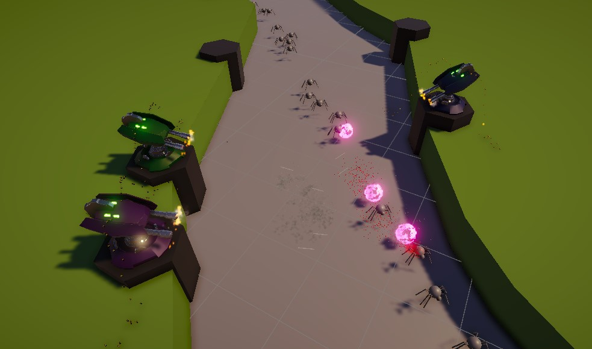

Инди-проект, над которым я работаю в свободное время.
Это башенная защита с уникальной механикой, разработанная на Unity с использованием
современных технологий, таких как ShaderGraph и URP для создания потрясающей графики.
В проекте реализованы:
• Система частиц для эффектов;
• Постобработка (PostProcessing) для улучшения визуала;
• Удобный геймдизайн с балансом сложности.

← Вернуться к портфолио